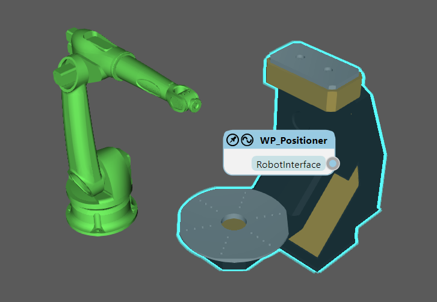
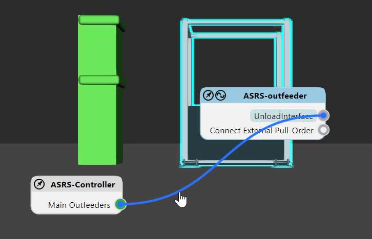
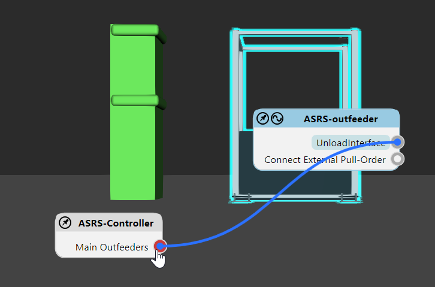
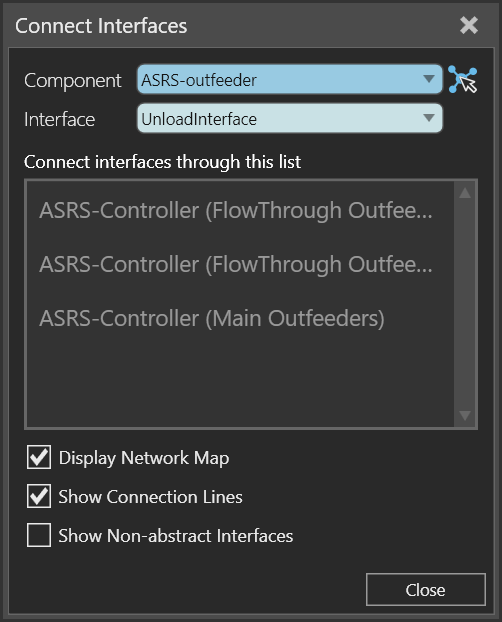
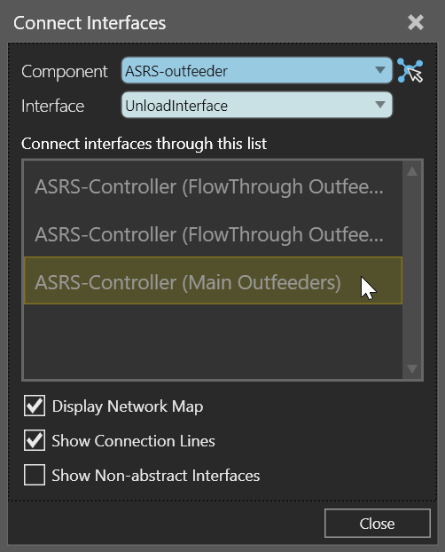
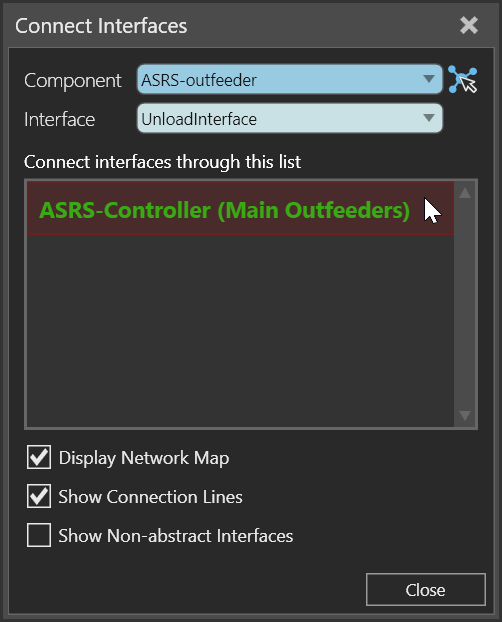

The Connect Interfaces command allows you to remotely connect components with abstract interfaces. Available interfaces and connections are based on the selected component in the 3D world.
Contents Hide
You can connect interfaces using editors in the 3D world. The editor of a selected component is highlighted, whereas the editor of another component with compatible interfaces is either visible or collapsed as an unfold button.
Tip: The location of an editor will automatically adjust to your view. You have the option of the pinning the editor to lock its location in the viewport.
An interface of a component is listed in its editor along with a connection point. If you select the interface, other components in the 3D world will be highlighted yellow to indicate an available connection. The connection point of a compatible interface will also be highlighted yellow.
A connected component is highlighted green as is the connection point of the connected interface. You also have the option of using the editor of the selected component to show the connection between two interfaces as a wire.

Note: By default, interface editors (nodes) for components are not displayed unless they have two matching interfaces with the selection. You can change this by editing "interfacesNodeVisibilityThreshold" in the app.config file.

To add a connection, do one of the following:


To remove a connection, do one of the following:



You can connect interfaces using the Connect Interfaces task pane.

Component allows you to select a component in the 3D world with at least one abstract interface.
Interface allows you to choose which interface in the selected component to connect with other interfaces.
Available connections with the selected interface are listed in the task pane. Each available connection is indicated by the name of its interface. A disconnected interface is greyed out, whereas a connected interface is colored green.
Display Network Map allows you to show/hide all interface editors in the 3D world.
Show Connection Lines allows you to show/hide all wires of connected interfaces in the 3D world.
Show Non-abstract Interfaces allows you to show/hide interfaces that are not abstract, for example an interface that supports Plug & Play. Generally, this is used to verify the physical connections of a component that has several interfaces. Another case is where you want to virtualize an interface to support a remote connection. For example, an interface without a physical location that is not abstract can be connected to a compatible interface that is abstract. In that case, the non-abstract interface is converted to abstract at the time of connection.
To add a connection:

To remove a connection:
